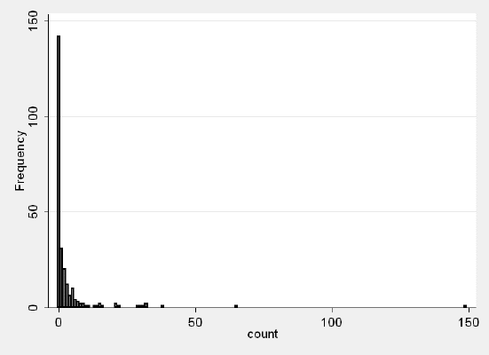

类型:翻译 翻译时间: 2016.07.30－ 译者:alingse
Introduction to SAS. UCLA: Statistical Consulting Group.
from http://www.ats.ucla.edu/stat/sas/notes2/ (accessed November 24, 2007).Version info: Code for this page was tested in Stata 12.
Zero-inflated poisson regression is used to model count data that has an excess of zero counts.
Further, theory suggests that the excess zeros
are generated by a separate process from the count values and that the excess zeros can be modeled independently.
Thus, the zip model has two parts, a poisson count model and the logit model for predicting excess zeros. You may want to review these Data Analysis Example pages, Poisson Regression andLogit Regression.
Please Note: The purpose of this page is to show how to use various data analysis commands. It does not cover all aspects of the research process which researchers are expected to do. In particular, it does not cover data cleaning and verification, verification of assumptions, model diagnostics and potential follow-up analyses.
Example 1.
School administrators study the attendance behavior of high school juniors over one semester at two schools. Attendance is measured by number of days of absent and is predicted by gender of the student and standardized test scores in math and language arts. Many students have no absences during the semester.
Example 2.
The state wildlife biologists want to model how many fish are being caught by fishermen at a state park. Visitors are asked whether or not they have a camper, how many people were in the group, were there children in the group and how many fish were caught. Some visitors do not fish, but there is no data on whether a person fished or not. Some visitors who did fish did not catch any fish so there are excess zeros in the data because of the people that did not fish.
Let's pursue Example 2 from above.
We have data on 250 groups that went to a park. Each group was questioned about how many fish they caught (count), how many children were in the group (child), how many people were in the group (persons), and whether or not they brought a camper to the park (camper).
In addition to predicting the number of fish caught, there is interest in predicting the existence of excess zeros, i.e. the zeroes that were not simply a result of bad luck fishing. We will use the variables child, persons, and camper in our model. Let's look at the data.
use http://www.stata-press.com/data/r10/fish, clear
summarize count child persons camper
| Variable | Obs | Mean | Std. Dev. | Min | Max |
|---|---|---|---|---|---|
| count | 250 | 3.296 | 11.63503 | 0 | 149 |
| child | 250 | .684 | .8503153 | 0 | 3 |
| persons | 250 | 2.528 | 1.11273 | 1 | 4 |
| camper | 250 | .588 | .4931824 | 0 | 1 |
histogram count, discrete freq

tab1 child persons camper
-> tabulation of child
child | Freq. Percent Cum.
------------+-----------------------------------
0 | 132 52.80 52.80
1 | 75 30.00 82.80
2 | 33 13.20 96.00
3 | 10 4.00 100.00
------------+-----------------------------------
Total | 250 100.00
-> tabulation of persons
persons | Freq. Percent Cum.
------------+-----------------------------------
1 | 57 22.80 22.80
2 | 70 28.00 50.80
3 | 57 22.80 73.60
4 | 66 26.40 100.00
------------+-----------------------------------
Total | 250 100.00 -> tabulation of camper
camper | Freq. Percent Cum.
------------+-----------------------------------
0 | 103 41.20 41.20
1 | 147 58.80 100.00
------------+-----------------------------------
Total | 250 100.00
Below is a list of some analysis methods you may have encountered. Some of the methods listed are quite reasonable while others have either fallen out of favor or have limitations.
We will run the zip command with child and camper as predictors of the counts, persons as the predictor of the excess zeros. We have included the vuong option which provides a test of the zero-inflated model versus the standard poisson model.
zip count child camper, inflate(persons) vuong
Fitting constant-only model:
Iteration 0: log likelihood = -1347.807
Iteration 1: log likelihood = -1315.5343
Iteration 2: log likelihood = -1126.3689
Iteration 3: log likelihood = -1125.5358
Iteration 4: log likelihood = -1125.5357
Iteration 5: log likelihood = -1125.5357
Fitting full model:
Iteration 0: log likelihood = -1125.5357
Iteration 1: log likelihood = -1044.8553
Iteration 2: log likelihood = -1031.8733
Iteration 3: log likelihood = -1031.6089
Iteration 4: log likelihood = -1031.6084
Iteration 5: log likelihood = -1031.6084
Zero-inflated Poisson regression Number of obs = 250
Nonzero obs = 108
Zero obs = 142
Inflation model = logit LR chi2(2) = 187.85
Log likelihood = -1031.608 Prob > chi2 = 0.0000
------------------------------------------------------------------------------
count | Coef. Std. Err. z P>|z| [95% Conf. Interval]
-------------+----------------------------------------------------------------
count |
child | -1.042838 .0999883 -10.43 0.000 -1.238812 -.846865
1.camper | .8340222 .0936268 8.91 0.000 .650517 1.017527
_cons | 1.597889 .0855382 18.68 0.000 1.430237 1.76554
-------------+----------------------------------------------------------------
inflate |
persons | -.5643472 .1629638 -3.46 0.001 -.8837503 -.244944
_cons | 1.297439 .3738522 3.47 0.001 .5647022 2.030176
------------------------------------------------------------------------------
Vuong test of zip vs. standard Poisson: z = 3.57 Pr>z = 0.0002The output looks very much like the output from an OLS regression:
Now we can move on to the specifics of the individual results.
The coefficients for child and camper can be interpreted as follows:
The inflate coefficient for persons suggests that for each unit increase in person the log odds of an inflated zero decrease by.564.
We can use the margins (introduced in Stata 11) to help understand our model. We will first compute the expected counts for the categorical variable camper while holding the continuous variable child at its mean value using the atmeans option.
margins camper, atmeans
Adjusted predictions Number of obs = 250
Model VCE : Robust
Expression : Predicted number of events, predict()
at : child = .684 (mean)
0.camper = .412 (mean)
1.camper = .588 (mean)
persons = 2.528 (mean)
------------------------------------------------------------------------------
| Delta-method
| Margin Std. Err. z P>|z| [95% Conf. Interval]
-------------+----------------------------------------------------------------
camper |
0 | 1.289132 .4393168 2.93 0.003 .4280866 2.150177
1 | 2.968305 .619339 4.79 0.000 1.754423 4.182187
------------------------------------------------------------------------------
The expected count for the number of fish caught by noncampers is 1.289 while for campers it is 2.968 at the means of child and persons.
Using the dydx option computes the difference in expected counts between camper = 0 and camper = 1 while still holding child at its mean of .684 and persons at its mean of 2.528.
margins, dydx(camper) atmeans
Conditional marginal effects Number of obs = 250
Model VCE : Robust
Expression : Predicted number of events, predict()
dy/dx w.r.t. : 1.camper
at : child = .684 (mean)
0.camper = .412 (mean)
1.camper = .588 (mean)
persons = 2.528 (mean)
------------------------------------------------------------------------------
| Delta-method
| dy/dx Std. Err. z P>|z| [95% Conf. Interval]
-------------+----------------------------------------------------------------
1.camper | 1.679173 .7754611 2.17 0.030 .1592975 3.199049
------------------------------------------------------------------------------
Note: dy/dx for factor levels is the discrete change from the base level.
The difference in the number of fish caught by campers and noncampers is 1.679, which is statistically significant.
One last margins command will give the expected counts for values of child from zero to three at both levels of camper.
margins, at(child=(0(1)3) camper=(0/1)) vsquish
Predictive margins Number of obs = 250
Model VCE : Robust
Expression : Predicted number of events, predict()
1._at : child = 0
camper = 0
2._at : child = 0
camper = 1
3._at : child = 1
camper = 0
4._at : child = 1
camper = 1
5._at : child = 2
camper = 0
6._at : child = 2
camper = 1
7._at : child = 3
camper = 0
8._at : child = 3
camper = 1
------------------------------------------------------------------------------
| Delta-method
| Margin Std. Err. z P>|z| [95% Conf. Interval]
-------------+----------------------------------------------------------------
_at |
1 | 2.616441 .6470522 4.04 0.000 1.348242 3.88464
2 | 6.024516 2.159288 2.79 0.005 1.79239 10.25664
3 | .922172 .4142303 2.23 0.026 .1102954 1.734048
4 | 2.123358 .4771534 4.45 0.000 1.188154 3.058561
5 | .3250221 .2611556 1.24 0.213 -.1868335 .8368777
6 | .7483834 .3929987 1.90 0.057 -.0218798 1.518647
7 | .114555 .1351887 0.85 0.397 -.1504101 .37952
8 | .2637699 .2365495 1.12 0.265 -.1998587 .7273984
------------------------------------------------------------------------------
**marginsplot**

The expected number of fish caught goes down as the number of children goes up for both people with and without campers.
A number of model fit indicators are available using the fitstat command, which is part of the spostado utilities by J. Scott Long and Jeremy Freese (findit spostado).
**fitstat**
Measures of Fit for zip of count
Log-Lik Intercept Only: -1127.023 Log-Lik Full Model: -1031.608
D(244): 2063.217 LR(4): 190.829
Prob > LR: 0.000
McFadden's R2: 0.085 McFadden's Adj R2: 0.079
ML (Cox-Snell) R2: 0.534 Cragg-Uhler(Nagelkerke) R2: 0.534
AIC: 8.301 AIC*n: 2075.217
BIC: 715.980 BIC': -168.743
BIC used by Stata: 2090.824 AIC used by Stata: 2073.217
Stata Online Manual
* [zip](http://www.stata.com/help.cgi?zip)Introduction to SAS. UCLA: Statistical Consulting Group. from http://www.ats.ucla.edu/stat/sas/notes2/ (accessed November 24, 2007).